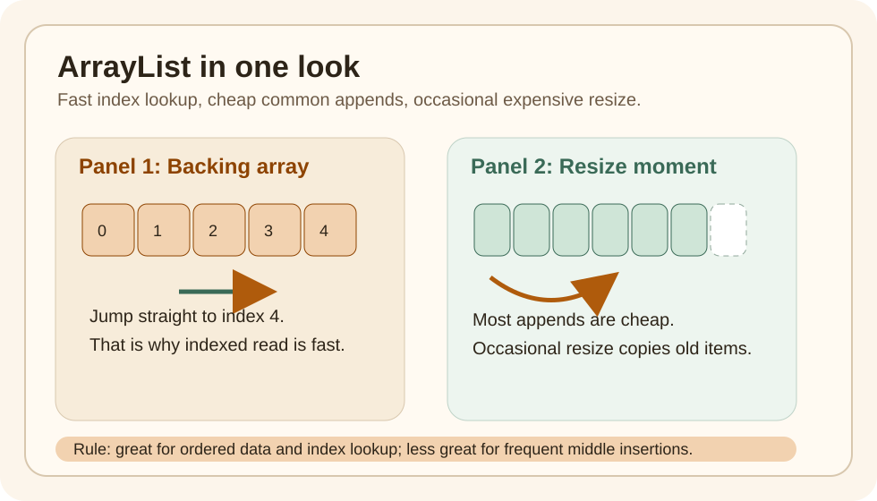

Static Topic Page
ArrayList Growth And Lookup
The Problem
Many developers can use ArrayList, but fewer can explain why it is usually fast and where it becomes costly.
That gap matters because performance problems often begin with the wrong mental model, not the wrong syntax.
Quick Visual

The picture tells the whole story:
- items sit in an array
- index lookup jumps straight to a slot
- growth occasionally copies old items into a larger array
Run This Code
Run the example and focus on these ideas:
- indexed lookup
- append behavior
- resizing cost
Expected Output
The printed output should make it clear that:
- lookup by index is direct
- appending is usually cheap
- occasional growth has a larger one-time cost
Wrong Example First
The wrong mental model is "every append is always O(1) with no caveat."
The better mental model is:
- most appends are cheap
- resizing is occasional
- average append cost stays good because the expensive resize does not happen every time
Why This Works
ArrayList stores elements in an array.
That gives fast index access, but growth sometimes needs a bigger array and element copying.
Comparison Snapshot
| Need | ArrayList |
LinkedList |
|---|---|---|
| Read by index | strong fit | weak fit |
| Append often | strong fit | fine, but rarely worth the tradeoff |
| Insert in middle often | can be costly | can help if you already have the node position |
| Cache-friendly iteration | usually better | usually worse |
Performance Lens
The key metric is not "does resize happen?"
It is "how often does the expensive resize happen compared with cheap appends?"
That is why the right phrase is:
- append is amortized
O(1) - indexed lookup is
O(1) - middle insertion is often
O(n)
Benchmark Lens
If you measure ArrayList, watch these operations separately:
- append at end
- read by index
- insert in middle
- remove in middle
Those four numbers teach more than one generic "ArrayList benchmark" ever will.
Use This When
- order matters
- index-based lookup matters
- duplicates are fine
- append-heavy workloads are common
Avoid This When
- frequent middle insertions dominate
- uniqueness is the main requirement
- key-based lookup is the real problem
Version Notes
ArrayList has existed since the Java Collections Framework arrived in Java 1.2, so this is a concept every Java engineer should understand no matter which Java version they use.
After Reading This, You Should Know
ArrayListis fast because it uses an array, not because it is magically optimized for everything- occasional resize cost is the tradeoff behind usually-cheap append
- complexity language becomes much easier once you connect it to actual storage shape
Next Topic
Read the HashMap buckets and collisions topic next. Together, these two topics form the base of practical Java collection judgment.